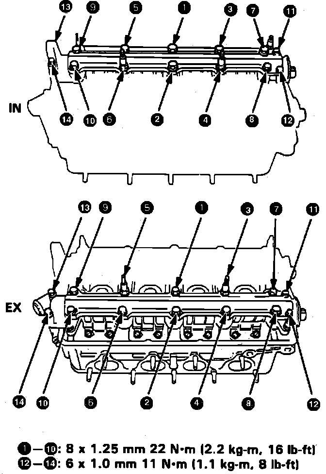

Rocker Arm Assembly: Service and Repair
Fig. 43 Camshaft Bearing Cap Bolt Tightening Sequence:

1. Perform steps 1 through 21 under Cylinder Head Assembly.Service and Repair
2. On models equipped with radio coded theft protection system, refer to Vehicle Damage Warnings for system disarming and arming procedures. On models equipped with airbag system, refer to Technician Safety Information for system disarming and arming procedures.
3. Install rocker arms in original position, while inserting rocker arm shaft into cylinder head,
4. Install orifices in original positions. If holes in cylinder head and rocker arm shaft are not aligned, install a 12 mm bolt in rocker arm shaft and rotate shaft as necessary.
5. Install camshafts and seals with open side facing in. Ensure keyways on camshafts are facing up.
6. Place O-ring and dowel pin in oil passage of No. 3 camshaft holder.
7. Apply liquid gasket to No. 1 and No. 5 camshaft holders on both camshafts, then install all camshaft holders. Arrows on camshaft holders should point toward Timing Belt.
8. Temporarily tighten camshaft holders and camshaft holder pipes.
9. Push camshaft oil seal securely against the base of the camshaft holder.
10. Tighten camshaft holder bolts to specifications in sequence shown, Fig. 43.
11. Install back cover of timing belt, then the camshaft pulleys.
12. On models equipped with radio coded theft protection system, refer to Vehicle Damage Warnings for system disarming and arming procedures. On models equipped with airbag system, refer to Technician Safety Information for system disarming and arming procedures.